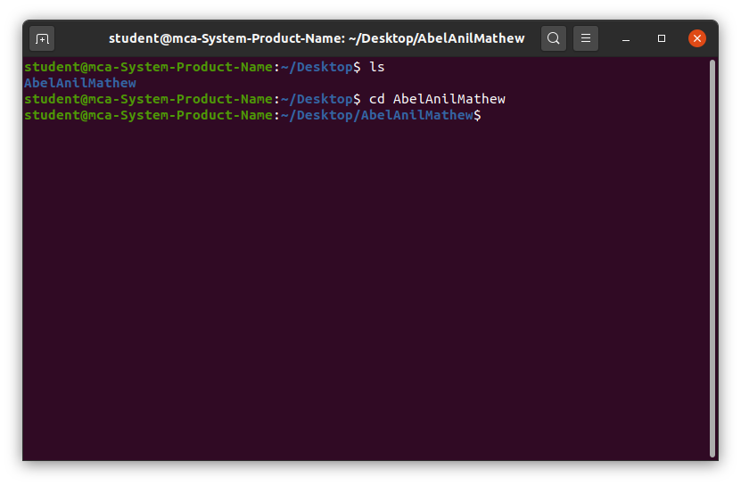

The cd command allows you to change directories in Linux, making it easier to navigate through the file system and manage your files efficiently.
- It allows the user to move to a different directory to view or manipulate files and subdirectories within that directory.
cd [directory]Here, replace [directory] with the destination directory path you want to navigate to. If no directory is specified, ‘cd’ will redirect to your home directory by default. Let’s explore the command’s functionality through examples.
To move inside a subdirectory in Linux we use the CD Linux Command. Here, replace [directory_name] with the desired directory you want to move in.
This command is used to move inside a directory from a directory. Here, replace “dir_1/dir_2/dir_3” with the subdirectory name or location you want to move in.
cd dir_1/dir_2/dir_3`~` This argument is used in the `cd` command to change the directory to the home directory from any location in the Linux System.
cd ~
[Note: We can also pass the `cd` command with no arguments, which will eventually land us in our home directory.]
cdThe cd command is an essential tool in Linux for navigating the file system. By mastering this command, users can easily switch between directories, improving their efficiency in managing files and organizing workflows. Whether you're moving through subdirectories, returning to the home directory, or quickly accessing a specific path, the cd command simplifies navigation and enhances productivity. As you continue to explore Linux commands, mastering cd is a key step towards becoming proficient in file management and system operations. Embrace the power of the cd command to streamline your Linux experience.
"Success is the sum of small efforts, repeated day in and day out."